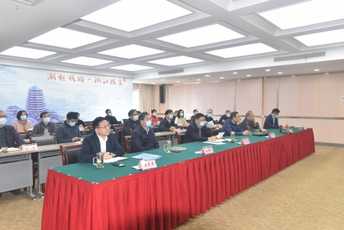

| 索引号： | 00248247X/2022-03159 | 公开方式： | 主动公开 |
|---|---|---|---|
| 文号： | 公开日期: | 2022-05-09 | |
| 发布单位： | 浙江省粮食和物资储备局 | 有效性: |
4月2日上午，国家粮食和物资储备局召开全国粮食和物资储备系统安全生产视频会议，学习传达习近平总书记关于安全生产的重要指示精神，分析研判形势，部署粮食物资系统安全生产工作。省局领导班子成员，局机关各处室、直属单位主要负责人等参加分会场视频会议。会后，省局党组书记、局长周维亮传达了3月31日全省安全生产电视电话会议精神，并对我省粮食物资系统安全生产工作作了再部署、再落实。
周维亮强调，要认真贯彻落实习近平总书记重要指示、李克强总理重要批示精神，按照全国和全省安全生产电视电话会议、国家局安全生产视频会议部署要求，清醒认识当前安全生产形势的严峻性和复杂性，统一思想，统一行动，更加坚决有力贯彻新发展理念，更好统筹发展和安全。始终绷紧安全生产这根弦，结合粮食物资系统实际，严格落实国务院安委会梳理的15条硬措施，切实消除重大安全风险隐患，坚决防范和遏制安全生产事故，以实际行动迎接党的二十大胜利召开。
周维亮要求严格落实安全生产责任制，坚持横向到边、纵向到底的原则，落实好企业主体责任和行业监管责任；要认真组织全员培训，做到学习有教材、安全有手册、岗位有须知，特别是要落实对外包作业人员的上岗培训和技术交底，增强安全意识；要加强安全管理，立即组织开展大检查、“回头看”，严厉查处违法违规行为，对违法违规行为情节严重的要公开通报，对存在重大风险隐患的要挂牌督办，杜绝监管宽松软；要严格执行疫情防控措施，各单位务必要管好本单位的“小门”，落实领导带班24小时值班值守制度，加强上下信息沟通，确保信息畅通，及时掌握工作动态，科学处置出现的险情苗头，切实做到防患于未然。